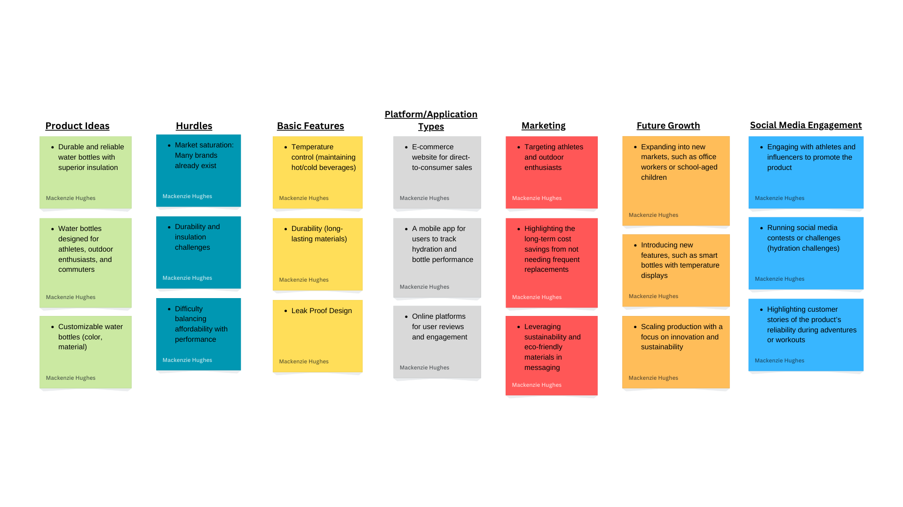

Problem Statement

Many individuals struggle to find a durable water bottle that consistently keeps beverages at their desired temperature for extended periods.
Affinity Diagram
This affinity diagram organizes key ideas related to the development, marketing, and support of a durable and reliable water bottle. It highlights product ideas, challenges, and opportunities for growth, covering essential features, pricing, customer feedback, and long-term business strategies. The diagram serves as a foundation for addressing both technical and customer-focused aspects of the product.